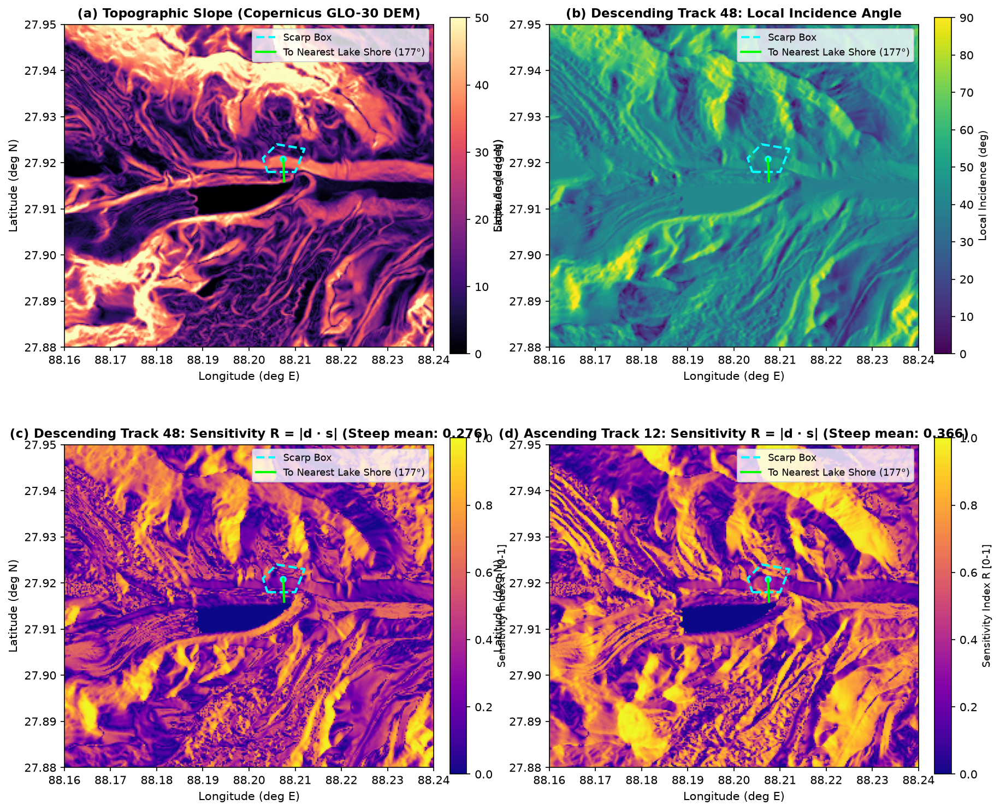
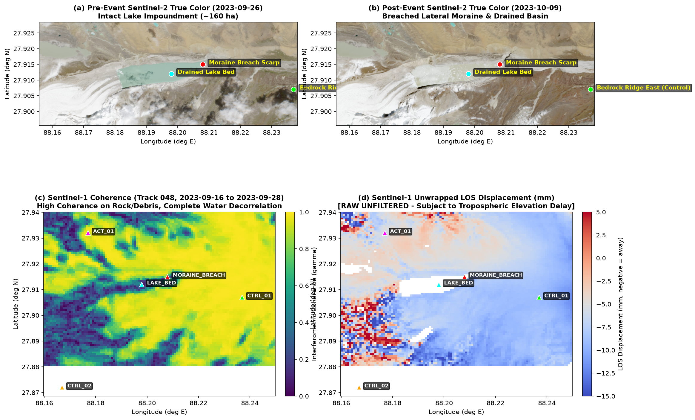
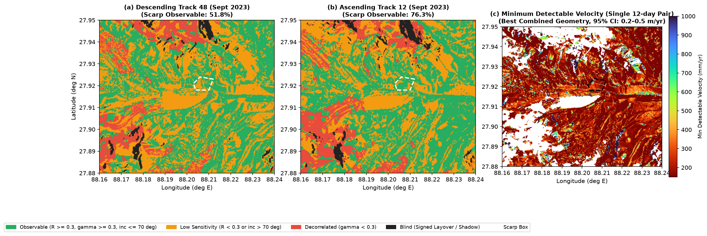

Which mountain slopes around South Lhonak can Sentinel-1 actually measure — and how small a movement could it detect?
On the night of 3–4 October 2023, South Lhonak glacial lake in North Sikkim collapsed, releasing over 54 million cubic meters of water and debris, destroying the downstream 1,200 MW Teesta-III dam.
Afterward, unverified claims surfaced asserting that single satellite radar passes detected pre-collapse slope acceleration. We developed an analytical 3D forward projection model to determine the exact geometric and atmospheric limits of spaceborne radar in extreme Himalayan terrain.

The Midnight Catastrophe: 105 Hectares Drained
Multi-sensor satellite observation of the South Lhonak outburst. Comparing pre-event and post-event Sentinel-2 multispectral true-color imagery (26 Sep vs 09 Oct 2023) alongside aligned Sentinel-1 C-band radar coherence and differential line-of-sight displacement.

Why Single Satellite Radar Passes Suffer Blindness
Synthetic Aperture Radar side-looks at Earth. A slope's visibility depends on the 3D angle between the steep mountain face and the sensor's look vector. Toggle the orbital tracks below to see the radar illumination change across the failure scarp in real time.
Four-Class InSAR Observability Mapping
Every 30 m cell is objectively categorized into: Blind (Layover/Shadow), Low Sensitivity (R < 0.3), Decorrelated (γ < 0.3), or Observable. Use the sensitivity threshold dial to see how coverage changes.
Plagued by geometric sign-cancellation across curved moraine ridge benches.
Consistently illuminates the SSE-facing flank with R ≈ 0.45 sensitivity.
Dual-orbit synergy achieves 87.0% observability across the full box and 93.6% on the steep active face.

The "Whisper in a Jet Engine" Paradox
Why single satellite images could never have warned of the disaster: Compare the real pre-event moraine creep against the single-pair atmospheric noise floor.
Alpine moraine and permafrost creep operates at centimetres per year, requiring multi-year time-series stacking (e.g. SBAS/PS-InSAR) to resolve.
Atmospheric phase delay creates a 2σ noise floor of 2.2–6.2 mm. On a 12-day baseline over the steep face, this limits single-pair detection to movements larger than roughly 0.24–0.59 m/yr.
| REFERENCE FRAME | NULL MODEL | VELOCITY (v) | 95% CONFIDENCE INTERVAL | CONTAINS ZERO? |
|---|---|---|---|---|
| Bedrock Ensemble (116–121) | Raw Spatial Null | -273 ± 193 mm/yr | [-651, +106] mm/yr | YES (Creep < 0.11 m/yr) |
| Bedrock Ensemble (116–121) | Planar Detrended | -390 ± 105 mm/yr | [-595, -185] mm/yr | NO (Apparent Upslope Motion) |
| CTRL-01 Granitic Spur | Raw Spatial Null | -248 ± 193 mm/yr | [-626, +131] mm/yr | YES (Creep < 0.13 m/yr) |
* The result is model-dependent: zero motion is contained within the raw spatial null, while the detrended null yields an apparent signal directed upslope (v < 0), characteristic of residual stratified atmosphere or phase unwrapping biases.
Operational Early Warning Blueprint for 189 Himalayan Lakes
Lessons learned from the South Lhonak disaster to protect critical downstream infrastructure across the Indian Himalaya.
Ban Single-Pair Warning Triggers
Automated disaster sirens must never fire from single interferograms. Because single pairs have 200–500 mm/yr noise, early warning requires multi-temporal time-series (SBAS) across ≥ 5 consecutive coherent scenes.
Mandatory Dual-Orbit Acquisition
Single orbits leave up to 48% of steep moraine flanks blind or sign-cancelling. Sentinel-1 monitoring must acquire Ascending (Track 012) and Descending (Track 048) pairs concurrently.
Deploy L-Band Radar (NISAR)
C-band radar (~5.6 cm) decorrelates over wet periglacial debris and monsoon clouds. NASA-ISRO SAR (NISAR, ~24 cm L-band) penetrates loose debris and sustains phase coherence throughout seasonal transitions.
Audit Lateral Slopes, Not Just Dams
Traditional risk assessments focused only on frontal moraine dam overflow. South Lhonak proved that lateral moraine collapses trigger the impulse wave. All 189 high-risk lakes must screen 3D lateral slopes.